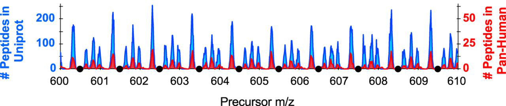

![]()
flowchart LR A[Fasta\nProteome] --> C[Unmodified] A[Fasta\nProteome] --> D(Acetyl Lysine) C --> E[in silico\ndigest] D --> F(in silico\ndigest) E --> G[calculate\nprecursor m/z] F --> G[calculate\nprecursor m/z] G --> H[m/z distribution] G --> J[Forbidden zones] J --> K[Optimal window placement]
Background
What are “forbidden zones” when working with mass spectrometry-based data. Forbidden zones, described in Frahm et. al. (2006), are the areas in the precursor mass range where peptides are not found. A more recent publication describing forbidden zones for DIA method development can be found in Pino et. al. (2020).

The “optimize window placement” feature in Skyline is there to place the boundaries of DIA windows in these forbidden zones.
This blog post aims to understand DIA methods, window placement, and forbidden zones.
Workflow
Importing data
- Human fasta file
- Acetyl Spectral library (from Baeza et.al. 2020)
- Precursor isolation windows
We’re going to analyze three data sets. The first is an in silico digest of the human proteome. The second is an in silico digest of the human proteome with acetyl-lysine (AcK) modifications present. The third is a spectral library from Baeza et. al.
Global functions
Code
# Digesting protein
digest_argc <- function(sequence){
tryCatch(
digest_aa_sequence(sequence, enzyme = "arg.c", missed = 0)$peptide,
error = function(e) NA,
warning = function(w) NA
)
}
# Digesting protein
digest_tryp <- function(sequence){
tryCatch(
digest_aa_sequence(sequence, enzyme = "trypsin", missed = 0)$peptide,
error = function(e) NA,
warning = function(w) NA
)
}Setting global variables
# Minimum peptide length
min_pep_len <- 7
# Mass of Proton (Da)
proton <- 1.007276466
# Acetylation mass (Da)
ack_d0_mass <- 42.010565
ack_d3_mass <- ack_d0_mass - 3*(1.007825) + 3*(2.014102)
# for the mz distribution
min_mz <- 300
max_mz <- 2500
# for zooming in the mz distribution
mz1 <- 640
mz2 <- 650In-silico digest of the human proteome
The first step is to perform an in silico digest of the complete human fasta file using trypsin cleavage rules. This is a list of all possible tryptic peptides with a charge state of 2 or 3 and at least 7 amino acid residues.
Code
# Digesting human proteome
# filtering for a minimum peptide length
hu_prot <- hu_fasta %>%
mutate(peptide = map(ProteinSequence, digest_tryp)) %>% # digesting proteome TAKES A LONG TIME!
unnest(peptide) %>%
select(-ProteinSequence) %>%
mutate(pep_len = nchar(peptide)) %>% # Counting peptide length
filter(pep_len >= min_pep_len) # Filtering for peptide size
# Calculating monoisotopic mass
# All lysines have acetyl modification
hu_prot <- hu_prot %>%
mutate(monoisotopic_mass = calculate_monoisotopic_mass(peptide, IAA = TRUE, AcK = FALSE))
# Calculating most likely charge state based on R|H + 1
hu_prot$z <- sapply(hu_prot$peptide, function(x){
length(unlist(gregexpr("K|R|H", x))) + 1 # For N-terminus
})
# calculating precursor m/z
# assuming z=2; z=3
hu_prot <- hu_prot %>%
filter(z == 2 | z == 3) %>%
mutate(precursor_mz = (monoisotopic_mass + (z * proton)) / z)In-silico digest of the acetyl proteome
In this step, I am adding an acetyl modification to every lysine residue and digesting the complete human proteome using the Arg-C digest rules. Acetylation on lysine residues prevents the proteolytic digestion by trypsin. Therefore only the arginine residues are used for digestion.
To generate in silico AcK peptides, I change the digestion rule from trypsin to ArgC. Trypsin cleaves at K and R residues, while ArgC cleaves at R residues only. Then, the mass of 42.010565 and 45.029396 is added for light and heavy AcK peptides, respectively.
Code
# Digesting human proteome
# Filtering for lysine containing peptides
# filtering for a minimum peptide length
hu_acetyl <- hu_fasta %>%
mutate(peptide = map(ProteinSequence, digest_argc)) %>%
unnest(peptide) %>%
select(-ProteinSequence) %>%
mutate(k_count = str_count(peptide, "K"),
pep_len = nchar(peptide)) %>%
filter(k_count > 0,
pep_len >= min_pep_len)
# Calculating monoisotopic mass
# All lysines have acetyl modification - either light (non-isotopic) or D3-Acetyl
hu_acetyl <- hu_acetyl %>%
mutate(Ack_D0 = calculate_monoisotopic_mass(peptide, IAA = TRUE, AcK = TRUE),
AcK_D3 = Ack_D0 - k_count*ack_d0_mass + k_count*ack_d3_mass) %>%
gather(isotope, monoisotopic_mass, Ack_D0, AcK_D3)
# Calculating most likely charge state based on R|H + 1
hu_acetyl$z <- sapply(hu_acetyl$peptide, function(x){
length(unlist(gregexpr("R|H", x))) + 1 # for n-terminus
})
# calculating precursor m/z
# assuming z=2; z=3
hu_acetyl <- hu_acetyl %>%
filter(z == 2 | z == 3) %>%
mutate(precursor_mz = (monoisotopic_mass + (z * proton)) / z)Acetyl spectral library cleaning
I have a spectral library that was published in Baeza et.al. 2020. I will also use this spectral library to compare with the human proteome analysis. As a clean up step, I am filtering only for peptides that are acetylated, i.e., contain a lysine residue.
Code
# Filtering for acetyl peptide
ack_speclib <- ack_speclib %>%
mutate(acetyl = str_detect(ModifiedPeptide, "Acetyl \\(K"),
heavy = str_detect(LabeledPeptide, "Acetyl D3")) %>%
filter(acetyl == TRUE)
# Removing duplicate entries
ack_speclib <- ack_speclib %>%
select(PrecursorCharge, PrecursorMz, StrippedPeptide, ModifiedPeptide, LabeledPeptide,
ProteinGroups, acetyl, heavy) %>%
distinct()mz distribution
Tryptic digest
Plotting the m/z distribution for tryptic peptide precursors
Code
ggplot(hu_prot %>% filter(precursor_mz > min_mz, precursor_mz < max_mz),
aes(x = precursor_mz)) +
geom_histogram(position = "dodge", binwidth = 10, color = "black", fill = "grey80") +
# annotate("rect", xmin = mz1, xmax = mz2, ymin = 0, ymax = Inf) +
scale_x_continuous(n.breaks = 15) +
theme(axis.text.x = element_text(angle = 45, hjust = 1)) +
theme_bw(base_size = 14) +
labs(title = "Peptide m/z distribution",
subtitle = "Tryptic Proteome",
y = "Number of precursors",
x = "Precursor m/z")
AcK peptides
Plotting the m/z distribution for Acetyl-K peptide precursors. Here, I’m restricting the peptides that have either 1 or 2 lysines.
Code
ggplot(hu_acetyl %>% filter(precursor_mz > min_mz, precursor_mz < max_mz, k_count <= 2),
aes(x = precursor_mz)) +
geom_histogram(position = "dodge", binwidth = 10, color = "black", fill = "grey80") +
scale_x_continuous(n.breaks = 15) +
theme(axis.text.x = element_text(angle = 45, hjust = 1)) +
theme_bw(base_size = 14) +
labs(title = "Peptide m/z distribution",
subtitle = "Acetyl Proteome",
y = "Number of precursors",
x = "Precursor m/z")
DIA Window placement
Next, we will zoom in to the m/z distribution between 640 and 650 and add the optimized-window-placement windows
Code
# Human proteome (Trypsin)
g1 <- ggplot(hu_prot %>% filter(precursor_mz >= mz1 & precursor_mz <= mz2)) +
geom_histogram(aes(x = precursor_mz), binwidth = 0.025, color = "black", fill = "grey80") +
geom_vline(data = optimal_windows_proteome %>% filter(start_mz >= mz1 & start_mz <= mz2),
aes(xintercept = start_mz), color = "black", linewidth = 1) +
theme_bw(base_size = 22) +
scale_x_continuous(n.breaks = 10) +
labs(title = "Tryptic Proteome",
subtitle = "in silico digest",
x = "Precursor m/z")
# Acetyl proteome (Arg-C)
g2 <- ggplot(hu_acetyl %>% filter(precursor_mz >= mz1 & precursor_mz <= mz2)) +
geom_histogram(aes(x = precursor_mz, fill = isotope), binwidth = 0.025, color = "black") +
geom_vline(data = optimal_windows_proteome %>% filter(start_mz >= mz1 & start_mz <= mz2),
aes(xintercept = start_mz), color = "black", linewidth = 1) +
theme_bw(base_size = 22) +
scale_x_continuous(n.breaks = 10) +
labs(title = "Acetyl Proteome",
subtitle = "in silico digest",
x = "Precursor m/z")
# Acetyl Spectral library
g3 <- ggplot(ack_speclib %>% filter(PrecursorMz >= mz1 & PrecursorMz <= mz2, PrecursorCharge < 4)) +
geom_histogram(aes(x = PrecursorMz), binwidth = 0.025, fill = "#2b8cbe", color = "black") +
geom_vline(data = optimal_windows_proteome %>% filter(start_mz >= mz1 & start_mz <= mz2),
aes(xintercept = start_mz), color = "black", linewidth = 1) +
theme_bw(base_size = 22) +
scale_x_continuous(n.breaks = 10) +
labs(title = "Acetyl Spectral library",
subtitle = "Baeza et.al. JPR 2020",
fill = "Charge",
x = "Precursor m/z")
# Rendering all three plots
g1 / g2 / g3
Conclusion
So, the optimized window placement function places the DIA windows within areas of the m/z space where monoisotopic peaks are not to be found. This works for acetyl-lysine peptides as well as deuterated acetyl-lysines as described in Baeza et. al.